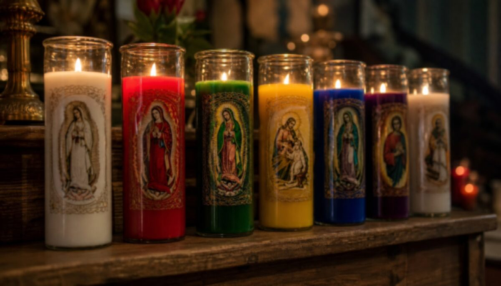

蜡烛魔法
火焰是意图的载体——在 Hoodoo 中，蜡烛是最直接的法术工具

各色七日烛（Seven-Day Vigil Candles）
在 Hoodoo 中，火焰是能量转化媒介。一根蜡烛不仅是蜡和灯芯，它是一台"能量发动机"。
独特之处
- 七日烛——玻璃杯装，可烧七天。杯壁图案和内部草药是其特色
- 涂抹（Dressing）——在蜡烛上涂抹魔法油，而非简单放置
- 蜡烛解读——蜡泪形状、火焰颜色、烟痕都是征兆
颜色对应
| 颜色 | 意图 | 说明 |
|---|
| 白 | 和平、净化、灵性保护 | 最通用 |
| 红 | 激情、爱情、勇气、胜利 | 力量型法术 |
| 绿 | 财富、繁荣、成长 | 金钱魔法 |
| 金/橙 | 成功、声望、吸引力 | 面试、公开场合 |
| 蓝 | 疗愈、和平、智慧 | 深蓝=灵性，浅蓝=沟通 |
| 紫 | 灵性力量、野心 | 冥想与权威 |
| 粉 | 温柔爱情、友谊 | 区别于红色激情 |
| 黑 | 吸收负面、破除障碍 | 破除诅咒 |
| 棕 | 稳定、扎根 | 家居、土地 |
涂抹技术
- 准备——迷迭香水清洁双手与蜡烛
- 涂油方向——吸引类：两端向中间；驱逐类：中间向两端
- 刻写——用牙签在侧面刻下名字或符号
- 滚草药——涂油后在草药粉中滚动
- 放置——安全烛台上，周围可放水晶、硬币
蜡烛解读
- 完全燃尽且杯净——最佳结果
- 火焰跳动、冒黑烟——有阻力
- 杯壁深色烟痕——负面被吸收
- 蜡泪偏一边——能量朝该方向聚集
常见类型
具体蜡烛咒
以下是《The Hoodoo Bible》第七卷收录的经典蜡烛保护咒，可直接上手。
紫色护烛咒 · 抵御恶灵
占卜前 · 精神防护
在占卜（如骨读、塔罗）前施作，确保被召唤的诸灵皆为善意，能守护你的空间。
材料
- 紫色蜡烛
- 碧玺（tourmaline）水晶
- 《圣经》
- 佛罗里达净水或圣水（Florida/Holy water）
- 保护油（protection oil）
- （可选）保护性草药粉末
- 净化工具：用佛罗里达水或圣水喷洒蜡烛，想象过往持有者的能量被驱离、随微风散去。记得留一扇窗或门开启，让负能量得以离开。
- 净化水晶：以同样方式净化碧玺（若近期已净化并用做保护，可省略）。
- 涂油：非惯用手持烛底、惯用手蘸保护油涂抹。因是驱逐类法术，涂油方向由烛底向烛芯（排斥）。可在烛身撒保护草药。
- 点燃：置于安全耐火表面点燃。
- 诵读诗篇 145：手持碧玺，在烛上大声诵读诗篇 145（防恶灵之章）数遍，感受周身被保护的氛围。
- 观想：想象紫色烛光将你笼罩、隔绝欲闯入你空间的邪灵。
- 收尾：若感觉防护已成而烛未燃尽，用烛剪或以手指捏灭；此烛可留作后续防护使用。
提示：涂油方向很关键——吸引类由两端向中间，驱逐类由烛底向烛芯（本咒）。
火焰之墙护咒 · Fiery Wall of Protection
严重威胁 · 强力防护
历史悠久的强力蜡烛保护咒，召唤圣弥额尔（Archangel St Michael）为你筑起烈焰之墙。此为重度防护咒，仅在确实需要严肃防护时使用——它不是逆转或报复，而是向敌方宣告：你已受够其把戏、不再容忍威胁。
材料
- 火焰之墙保护油（Fiery Wall of Protection oil）
- 白蜡烛 1 支、黑蜡烛 1 支
- 紫色蜡烛 7 支
- 圣弥额尔红色七日烛 1 支（或红烛 + 圣弥额尔像）
- 耐热碟或灰盘
- 数片纸张
- （可选）保护性草药或粉末
- 净化：先净化所有蜡烛与物件，清除前一位持有者的能量。
- 白烛刻名：在白烛表面（或底部）刻下需保护者之名。此烛代表受保护之人——纯净、无辜、承受恶意者。
- 白烛涂油：惯用手持烛底（底朝自己），以惯用手蘸火焰之墙油，自烛底向烛芯涂抹，以驱退敌方能量。若此刻你正与敌激化，请停下——此咒要求你站上道德高地，须如同自己配得上所求的神圣庇护。
- 独放白烛：将白烛单独置于布阵后方，作为那位无辜受害者的象征，独立而坚强。
- 紫烛布阵：逐支取起七支紫烛，将它们奉献给你的神祇或信仰，感谢它们成为圣弥额尔军团的一员、为你效力。每放一支，想象一排战士站在受护者身前，忠心护佑无辜、誓死护卫。这支无畏而冷峻的紫烛防线，便是你的"火焰之墙"。凝望这支防线，感受其力量与信念。
- 红烛·圣弥额尔：取红烛，涂上火焰之墙油（同样自底向烛芯），心怀敬意——它代表圣弥额尔，以烈焰净剑守护你。
- 黑烛·敌方：取黑烛——不涂油、不刻写。它代表你的敌人，不值得你倾注能量。将其置于众烛之前、与白烛同轴、正对圣弥额尔红烛之前。此刻你的敌人独对圣弥额尔及其军团，而你被护卫其后。
- 写下敌名：在纸上写下敌名，向外（离身方向）折三次，置于黑烛之下。可在白烛周围洒上保护草药或乳香油。
- 点烛：从容地逐支感谢并点燃七支紫烛（自左至右），作为圣弥额尔军团集结；再点燃白烛；待"军团"就位后，点燃圣弥额尔红烛，感谢他的护卫；最后点燃黑烛。
- 宣告所求：此刻说出你所要驱除之物——驱除那威胁与恶意，不要祈愿伤害。当站上道德高地，念及因果，祈愿威胁与敌人离去、不再对你有支配之力。
- 诵读圣弥额尔祷文："圣弥额尔天神，求汝于临战之际护佑我等，御防魔鬼的邪恶与诡计；愿天主斥责之，我们谦卑恳祷，也求你，天军之君王，以上主之威能，将撒旦及所有游荡世间、图谋毁灭……的邪灵投入地狱。"
- 收尾：视各烛燃毕情况妥善收尾，感恩圣弥额尔及其军团。
重要：书籍特别说明——若无法凑齐各色烛，纯白蜡烛即可，效果等同。彩色烛是现代辅助，关键在于纯净的意图。
色彩哲学：在 Hoodoo 中，蜡烛的颜色并不创造魔法——魔法来自你本身，来自你的意图与沟通诸灵/祖先的能力。颜色与形状只是帮你时刻牢记意图、强化专注的技巧。一支普通白烛可施一切法。